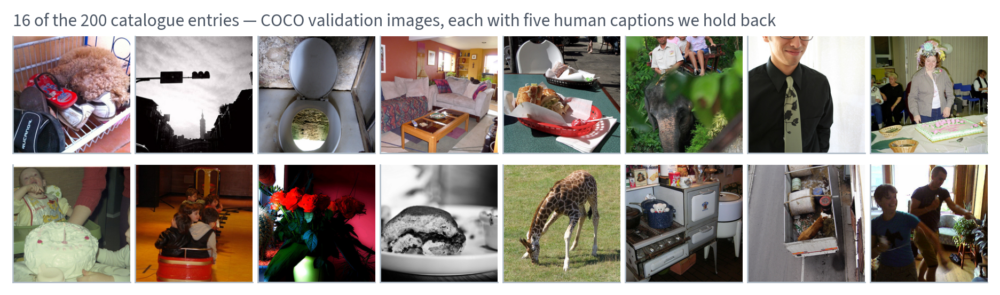
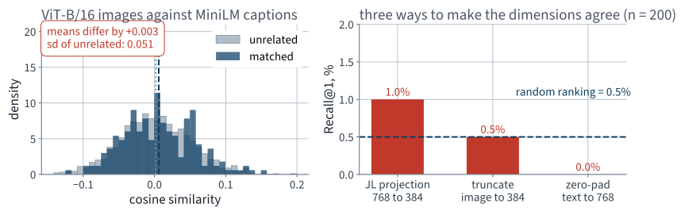
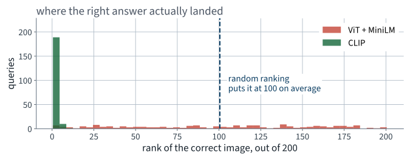
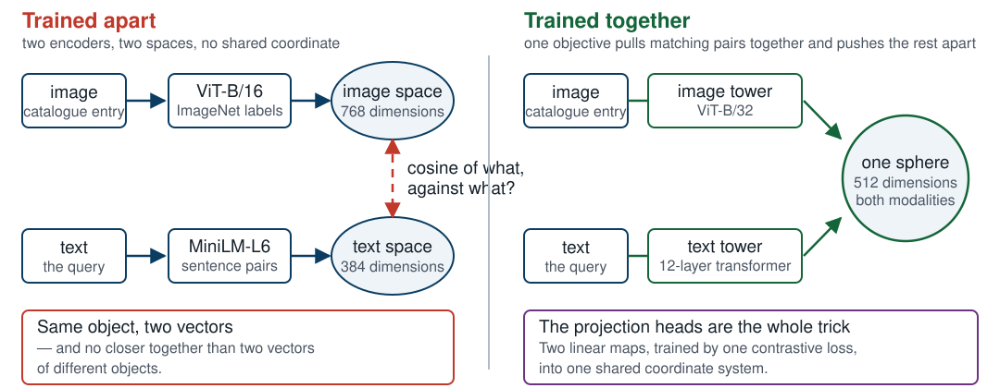
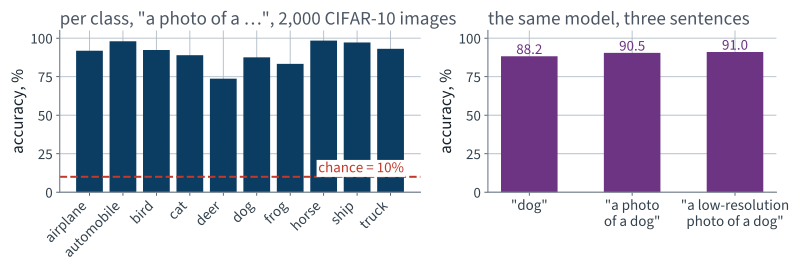
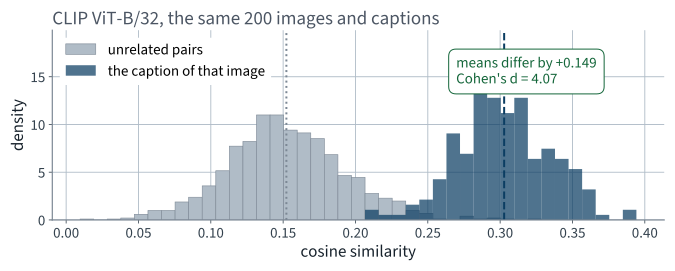
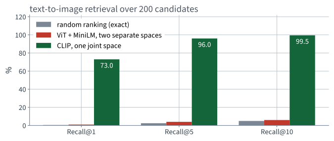
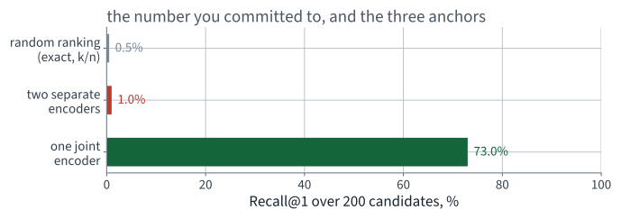

Application 12 · a product catalogue of images, queried in words
Lecture 23 · Build Géron Ch. 15–16
Applications of Machine Learning
BSc Mathematics of Artificial Intelligence · Third year
In the previous application you built a semantic search over a corpus of customer feedback: sentences in, sentences out, ranked by cosine similarity in an embedding space.
The last Build lecture. The commitment ritual runs one more time, and it is scored in the next lecture along with the course.
Part one
15 minutes
A retailer’s catalogue team. Their catalogue has one property that breaks every search system they have bought:
Customers type sentences. The catalogue stores pixels. Nothing in the system converts one into the other.
| Input | Output |
|---|---|
| A sentence typed by a customer | A ranked list of catalogue entries |
| “a red bus on a city street” | the entries whose picture shows that |
This is the first brief in the course whose input and output are not the same kind of object.
Keyword search needs text on both sides. So does the semantic search you built in the previous application: it embeds a sentence and compares it to other sentences.
Hold that thought. It is measured before the end of today and repaired in the next lecture.
| Idea | Chapter |
|---|---|
| Transformers, attention, the encoder stack | 15 |
| Vision transformers: an image as a sequence of patches | 16 |
| Text–image models and zero-shot prediction | 16 |
| Sentence embeddings and semantic search | 15 |
Chapter 16 is the last chapter in scope. This is the last application, and it uses both halves of Part IV at once.
The catalogue is drawn from COCO — the same corpus as the detection application, and one the book names.
What we take instead: the split index — a small CSV listing images and their human-written captions — and then the images themselves, one at a time, only the ones we use.
200
catalogue entries
32.6 MB on disk
Say the candidate-set size every time you say a recall. A recall without it is not a measurement.

Ordinary photographs of ordinary things — and five sentences each, written by five different people, which the search system never sees.
entry = {
"sku": "CAT-000164",
"file": "COCO_val2014_000000000164.jpg",
"captions": [
"A black and white photograph of a man on a bench.",
"A man sitting alone on a park bench reading.",
"An older gentleman reads a newspaper outdoors.",
# ... five in total, five different people
],
}
The captions are evidence, not part of the product. They let us score a system that never sees them.
| Caption | Role | Who sees it |
|---|---|---|
| #1 | the entry’s description, when it has one | the text index |
| #2 | the customer’s query | the search box |
| #3–5 | held back | nobody, today |
Using two different people’s sentences about the same picture makes this a paraphrase problem rather than a lookup. If we used the same sentence on both sides, a hash table would score 100%.
Step 4 of the working loop: test against a case whose answer you know. The catalogue has no labels, so it cannot play that role.
| Corpus | Size | Job |
|---|---|---|
| COCO catalogue | 200 images | the real task: rank entries for a query |
| CIFAR-10 test | 2,000 images | the known-answer check: ten labels we have |
CIFAR-10 is 32×32. That is a hard setting for any model trained on web photographs, and we will see the cost.
Encode an image
A vision transformer cuts the image into patches, embeds
each, and runs a transformer encoder over the sequence. The
[CLS] vector is the image.
Chapter 16. You met the convolutional route in Application 8.
Encode a sentence
A transformer encoder over subword tokens, mean-pooled over positions. The vector is the sentence.
Chapter 15. You built exactly this in the previous application.
So: encode the images, encode the query, take the cosine. What could go wrong?
Part two
15 minutes
The system returns a ranked list. So the quantity that matters is where the right entry landed.
Ties count against us: a tie is scored as the worse rank. A metric that flatters a degenerate score matrix is not a metric.
With exactly one relevant entry per query, recall and precision at k carry the same information, and recall is the one the literature reports. We will read R@1, R@5 and R@10.
R@1 is the number the product actually cares about: it is the top of the page.
Rank 1 contributes 1, rank 2 contributes 0.5, rank 100 contributes 0.01. It rewards being nearly right and stops rewarding it quickly — which matches a page of ten results.
Rule 2 from the first lecture: every number needs a baseline. Here the baseline needs no experiment at all.
Shuffle the catalogue. One relevant entry among $n$, placed uniformly at random:
$H_n$ is the harmonic number. No simulation, no seed, no error bar — this one is arithmetic.
| Quantity | Value at n = 200 |
|---|---|
| Recall@1 | 0.5% |
| Recall@5 | 2.5% |
| Recall@10 | 5.0% |
| Expected rank | 100.5 |
| MRR | 0.029 |
These scale with the catalogue. On 5,000 candidates R@1 would be 0.02%. Quote the size or quote nothing.
Metric:
Candidate-set size:
Recall@1 a good system should reach:
Recall@1 I expect from what we build today:
Anchored, not guessed: shuffling scores 0.5% at rank 1 and 5.0% in the top ten.
Part three
60 minutes
Open Lecture 23 in Google Colab
It downloads the split index and 200 images — 33 MB, about a minute on a Colab connection. The model weights are the slow part.
Four steps, each of which you have written before. The interesting part is step 3, and it is interesting for a reason none of us has met yet in this course.
# an image-only encoder: ImageNet labels, no text anywhere in training
import torch
from transformers import AutoImageProcessor, ViTModel
proc = AutoImageProcessor.from_pretrained("google/vit-base-patch16-224")
vit = ViTModel.from_pretrained("google/vit-base-patch16-224",
add_pooling_layer=False).to(device).eval()
feats = []
with torch.no_grad():
for i in range(0, len(images), 32):
batch = proc(images=images[i:i + 32], return_tensors="pt").to(device)
feats.append(vit(**batch).last_hidden_state[:, 0].cpu()) # [CLS]
V = torch.cat(feats).numpy()
assert V.shape == (200, 768), V.shape
add_pooling_layer=False because that
checkpoint has no pooler weights — ask for one and you get a randomly
initialised layer, silently.
from transformers import AutoModel, AutoTokenizer
tok = AutoTokenizer.from_pretrained("sentence-transformers/all-MiniLM-L6-v2")
enc = AutoModel.from_pretrained("sentence-transformers/all-MiniLM-L6-v2") \
.to(device).eval()
with torch.no_grad():
b = tok(queries, return_tensors="pt", padding=True,
truncation=True, max_length=128).to(device)
h = enc(**b).last_hidden_state # (200, tokens, 384)
m = b["attention_mask"].unsqueeze(-1).float()
T = ((h * m).sum(1) / m.sum(1)).cpu().numpy() # mean pooling
assert T.shape == (200, 384), T.shape
Mean pooling over real tokens only — the mask matters, and forgetting it averages in the padding.
V.shape # (200, 768)
T.shape # (200, 384)
V @ T.T # ValueError: matmul: dimensions 768 and 384 do not match
Three ways, so that nobody can blame the fix:
| # | Method | Justification |
|---|---|---|
| 1 | Random Gaussian projection, 768 → 384 | Thread 5: Johnson–Lindenstrauss |
| 2 | Keep the first 384 coordinates | crude, but it changes nothing that matters |
| 3 | Zero-pad the text vectors to 768 | the other direction, for symmetry |
Thread 5 told us a random projection preserves the image geometry to within a stated tolerance — and it did: the pairwise cosines before and after the projection correlate at 0.86. It said nothing at all about aligning that geometry with anything else.
Reviewer discipline: a similarity is meaningless alone. Compute two numbers, always:

The matched pairs and the unrelated pairs are the same distribution, and all three fixes land on the random-ranking line.
| Pairs | Mean cosine | sd |
|---|---|---|
| Image and its own caption | +0.0060 | 0.0499 |
| Image and an unrelated caption | +0.0034 | 0.0514 |
| Difference | +0.0026 | Cohen’s d = +0.052 |
The gap between the two means is a small fraction of the spread of either. On the strength of the similarity alone, you cannot tell a matching pair from a random one.
| System | R@1 | R@5 | R@10 | Median rank |
|---|---|---|---|---|
| Random ranking (exact) | 0.5% | 2.5% | 5.0% | 100 |
| ViT + MiniLM, JL projection | 1.0% | 4.0% | 6.0% | 104 |
| ViT + MiniLM, truncated | 0.5% | 2.0% | 5.5% | 80 |
| ViT + MiniLM, zero-padded | 0.0% | 2.5% | 5.5% | 80 |
Two of the 200 queries put the right image first. Shuffling is expected to get one. Two strong encoders, over a hundred million parameters between them, and that is the whole difference.

A flat histogram is what “no information” looks like. Every rank is as likely as every other.
A picture of a bus and the sentence “a red bus on a city street” are no closer than that picture and a sentence about a sandwich.

The fix is not a better image encoder. It is a training signal that ever compared the two.
The worked assistant failure
the failure this lecture is about
Under-specified in exactly one place. Find it before the next slide.
import numpy as np
def unit(x):
return x / np.linalg.norm(x, axis=1, keepdims=True)
# make the dimensions line up, then compare each image with its own caption
rng = np.random.default_rng(0)
R = rng.normal(0, 1 / np.sqrt(384), size=(768, 384))
Vp, Tn = unit(unit(V) @ R), unit(T)
sim = (Vp * Tn).sum(axis=1) # cosine of each matched pair
print(f"mean similarity of an image and its caption: {sim.mean():.3f}")
print(f"{(sim > 0.05).mean():.0%} of pairs score above 0.05")
It runs, on the real data, and prints two believable numbers.
“What does an unrelated pair score?”
The script computes the diagonal of the similarity matrix and never touches the other 200 × 200 minus 200 entries. It reports a level where only a difference means anything.
| What the script reports | Value |
|---|---|
| Mean similarity, matched pairs | +0.0060 |
| What it did not report: unrelated pairs | +0.0034 |
| Retrieval R@1 of the system it describes | 1.0% |
| Random ranking | 0.5% |
The cost is not a rounding error. The reported number supports a system that is indistinguishable from shuffling the catalogue.
Every clause exists because leaving it out produced a number somebody believed.
The repair, one lecture early
the objective itself is the next lecture
Take a large collection of (image, caption) pairs. Push each image through an image tower and each caption through a text tower, both ending in a linear map into the same $d$-dimensional space. Normalise onto the unit sphere. Then train so that, within a batch, each image’s own caption scores higher than every other caption in the batch.
| Component | What it is |
|---|---|
| Image tower | ViT-B/32 — the same architecture as before |
| Text tower | a 12-layer transformer encoder |
| Shared space | 512 dimensions, on the unit sphere |
| Training data | image–text pairs collected from the web |
Non-examinable engineering detail: the checkpoint is about 600 MB and downloads once. The architecture — two encoders and two projections — is entirely Chapters 15–16.
from transformers import CLIPModel, CLIPProcessor
proc = CLIPProcessor.from_pretrained("openai/clip-vit-base-patch32")
model = CLIPModel.from_pretrained("openai/clip-vit-base-patch32") \
.to(device).eval()
with torch.no_grad():
ib = proc(images=images, return_tensors="pt").to(device)
I = model.get_image_features(**ib).cpu().numpy()
tb = proc(text=queries, return_tensors="pt",
padding=True, truncation=True, max_length=77).to(device)
T = model.get_text_features(**tb).cpu().numpy()
I, T = unit(I), unit(T) # onto the sphere, both of them
sim = T @ I.T # (queries, images) — now this is legal
assert sim.shape == (200, 200)
Same shape on both sides, so the matrix product exists. That is the entire difference.
I, T = unit(I), unit(T)
get_image_features and
get_text_features return vectors that are not
normalised. Skip this line and the code still runs, still returns a matrix,
and still produces a ranking.
The catalogue has no labels, so nothing there can tell us the model is loaded correctly, pointed at the right tensors, and preprocessing the images the way it was trained to.
No training, no fitting, no labels used except to score. This is what “zero-shot” means, and it is the check, not the product.
classes = ["airplane", "automobile", "bird", "cat", "deer",
"dog", "frog", "horse", "ship", "truck"]
with torch.no_grad():
tb = proc(text=[f"a photo of a {c}" for c in classes],
return_tensors="pt", padding=True).to(device)
W = unit(model.get_text_features(**tb).cpu().numpy()) # (10, 512)
pred = (F @ W.T).argmax(axis=1) # F: (2000, 512), already unit
acc = (pred == y).mean()
print(f"zero-shot accuracy over {len(y)} images: {acc:.1%} chance: 10.0%")
The classifier is ten sentences. There is no fitted parameter anywhere in that cell.

90.5% over 2,000 images against a 10% chance level — from a model that has never seen CIFAR-10.
| Prompt | Accuracy over 2,000 images |
|---|---|
| “dog” | 88.2% |
| “a photo of a dog” | 90.5% |
| “a low-resolution photo of a dog” | 91.1% |
| Chance | 10.0% |
A spread of 2.9% from changing the wording alone. A “zero-shot” number is a number for one particular sentence, and the sentence is a choice you made.
Same 200 images. Same 200 queries. Same metric, same ties rule, same baseline. Only the encoders changed.
rank = (sim >= sim.diagonal()[:, None]).sum(axis=1) # ties count against us
for k in (1, 5, 10):
print(f"R@{k:<3d} {(rank <= k).mean():6.1%} random: {k / len(rank):6.1%}")
print(f"median rank {np.median(rank):.0f} of {len(rank)}")

Now the two distributions come apart — the means differ by +0.149, which is 4.1 pooled standard deviations.

Random ranking and the two-encoder system are the same bar. The joint encoder is a different picture entirely.
| System | R@1 | R@5 | R@10 | Median rank | MRR |
|---|---|---|---|---|---|
| Random ranking | 0.5% | 2.5% | 5.0% | 100 | 0.029 |
| ViT + MiniLM | 1.0% | 4.0% | 6.0% | 104 | 0.038 |
| Joint dual encoder | 72.5% | 96.0% | 99.5% | 1 | 0.825 |
Text to image, 200 candidates, ties against the model, one caption per entry as the query.
| Direction | R@1 | R@5 | R@10 |
|---|---|---|---|
| Text → image (search the catalogue) | 72.5% | 96.0% | 99.5% |
| Image → text (caption an entry) | 72.5% | 98.5% | 99.0% |
One symmetric space, two products: a search box and a “find the description that fits this photo” tool. The second one becomes useful in the next lecture.
Correct, and worth being precise about. The two systems differ in training data as well as in objective.
Some entries do have a description. For those, the previous application’s semantic search applies directly: embed the description, embed the query, rank by cosine. Same space on both sides, because both sides are sentences.
D = unit(minilm(descriptions)) # (200, 384)
Q = unit(minilm(queries)) # (200, 384)
rank = (Q @ D.T >= (Q @ D.T).diagonal()[:, None]).sum(axis=1)
Query and description are different people’s sentences about the same picture, so this is paraphrase matching.
| Route | R@1 | R@5 | R@10 |
|---|---|---|---|
| Text query → text description | 61.5% | 89.0% | 96.0% |
| Text query → image (joint space) | 72.5% | 96.0% | 99.5% |
Two independent routes to the same entry. A production system would use both.
Both are measured over the same 200 candidates with the same queries, so the two numbers are comparable — which is not automatic and is worth checking every time.
The team told us descriptions are “inconsistent, often absent”. Model that: delete the description of 60 of the 200 entries, chosen by a fixed rule so the experiment repeats.
| Measured on those 60 entries | R@1 |
|---|---|
| With their description present | 66.7% |
| With their description deleted | 0.0% |
Not “worse”. Zero, structurally: an entry with no text is not in a text index at all.
| Text-only route, all 200 queries | R@1 | R@10 |
|---|---|---|
| Every entry described | 61.5% | 96.0% |
| 60 entries with no description | 46.0% | 68.5% |

Two of these three bars are the same bar. Which one did your sheet predict?
72.5% at rank 1 means 27.5% of queries did not get the right entry first. Look at them.
Customers do not type captions. They type things like:
The right output is not one entry. It is a shortlist with reasons — and we have no way to produce, or to score, a reason.
The second thing the next lecture repairs.
| Step | Scale |
|---|---|
| Encode the catalogue | once, offline |
| Encode a query | one forward pass |
| Rank | one matrix–vector product |
| Model parameters | 151 million |
A dual encoder is cheap at query time precisely because the two towers never talk to each other. A model that scored (image, text) jointly would be more accurate and would have to run 200 times per query.
Non-examinable: that trade-off is why production search retrieves with a dual encoder and then re-ranks a shortlist with something heavier.
Swap notebooks
15 minutes
Question 3 already earned its place today: the crash on slide 30 was question 3, asked by the interpreter instead of by you.
sim = T_emb @ I_emb.T
rank = 1 + (sim > sim.diagonal()[:, None]).sum(axis=1)
print(f"R@1 = {(rank == 1).mean():.1%}")
It runs. On the real embeddings it prints a number close to the one on the previous slide. What is wrong with it, and what input would make it print 100%?
> counts only candidates that beat the right answer.
Anything that ties with it is placed behind it, for free.
Feed it a similarity matrix of all zeros — a model that has learned nothing, or a bug that zeroed the embeddings — and every rank is 1. It reports R@1 = 100%.
rank = (sim >= sim.diagonal()[:, None]).sum(axis=1) # ties count against us
best = None
for template in ["{}", "a photo of a {}", "a low-resolution photo of a {}"]:
acc = zero_shot_accuracy(template, X_test, y_test)
if best is None or acc > best[1]:
best = (template, acc)
print(f"best template {best[0]!r}: {best[1]:.1%} on the test set")
Which of the five questions catches this, and which lecture did we first meet it in?
The spread across the three was 2.9%, so the optimism is of that order. The repair is the one you already know: choose the template on a validation split, report the chosen one on the test set, once.
Best Recall@1 I obtained today:
Over how many candidates?
One query the system got wrong, and why:
Bring the sheet. The next lecture scores it, and then scores the whole course.
The full index is on the course site.
| Topic | Chapter |
|---|---|
| Transformer encoders, attention, positional encoding | 15 |
| Sentence embeddings and semantic search | 15 |
| Vision transformers; patches as tokens | 16 |
| Text–image models; zero-shot classification | 16 |
| Random projection and Johnson–Lindenstrauss | 7 |
Everything beyond these — re-rankers, hard negative mining, the retrieval literature’s standard benchmarks — is outside Chapters 1–16 and is not examinable.
Lecture 24 · Fix, and the end
Mathematical thread 12 — the contrastive objective and its temperature
Why unrelated pairs should aim at zero, and not at −1
Then: twelve applications, and the twelve things that broke
Bring your committed numbers — all of them